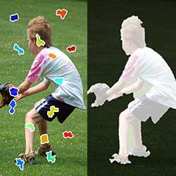

I recently completed my PhD in Computer Vision with Jim Rehg at the School of Interactive Computing, Georgia Tech.
What excites me is that we know of at least one exceptional vision system: the brain - which theoretically gives Artificial Intelligence researchers a system to mimic. Interestingly, some neuroscientists have shown how critical is motion when our visual cortex learns to recognize patterns [1]. This is why I like working with video data. We humans have developed our perception from a temporally continuous stream of information - not from individual images - so why should the machines we make be any different? Over the coming years I would like to build algorithms which can perceive video through machine learning. I would like these algorithms to be flexible enough to even comprehend single images.
Over the years, I have worked on segmentation and occlusion. I am currently intrigued by problems where improvements in combinatoric optimization can help either make problems tractable or reveal more information about video sequences.
Apart from Computer Vision, I have had interludes into Systems research - working on Google's MapReduce with Umar Saif.
Biography: I received my Ph.D. in computer vision at the School of Interactive Computing, Georgia Institute of Technology in 2018. My thesis explored recognition problems in videos where motion and sparse labeling can be used to build a life-long object learning system. Before attending Georgia Tech, I received my Masters degree in CG, Vision & Imaging in late 2010 from UCL. Here, I researched with Gabriel Brostow (aka Gabe) on detecting regions of occlusion in consecutive video frames. I also did a brief stint at The University of Warwick with Nasir Rajpoot, developing registration and dimensionality reduction techniques for cancerous tissue examined under Toponome Imaging System. Previously, I was stationed at LUMS SSE where I worked with Sohaib Khan. In my 3 years stay, I collaborated with biologists at LUMS SSE and MRC NIMR in developing tracking techniques for fluorescence microscopy.
-
PhD Thesis"Detection and Incremental Object Learning in Videos"
PhD. Dissertation, School of Interactive Computing, Georgia Tech. April 2018.
[PDF], [BibTeX] -
MS Thesis"Learning Occlusion Regions"
MS. Dissertation, Computer Graphics, Vision and Imaging, University College London. Sept 2010.
[PDF], [BibTeX]
-
New"Iterative Machine Teaching"
International Conference on Machine Learning (ICML), August 2017.
[Code], [Demo], [Talk], [Slides], [PDF], [BibTeX] -

"The Middle Child Problem: Revisiting Parametric Min-cut and Seeds for Object Proposals"
IEEE International Conference on Computer Vision (ICCV), Dec. 2015.
[Webpage + Code], [PDF], [BibTeX] -
"Finding Temporally Consistent Occlusion Boundaries in Videos using Geometric Context"
IEEE Winter Conference on Applications of Computer Vision (WACV), Jan. 2015.
[Webpage + Dataset], [PDF], [BibTeX] -
"RIGOR: Reusing Inference in Graph Cuts for generating Object Regions"
IEEE Conference on Computer Vision and Pattern Recognition (CVPR), June 2014.
[Webpage + Code], [PDF], [BibTeX] -
"Video Segmentation by Tracking Many Figure-Ground Segments"
IEEE Conference on Computer Vision (ICCV), Dec. 2013.
[Webpage + Code], [Dataset], [PDF], [BibTeX] -
"Learning a Confidence Measure for Optical Flow"
IEEE Pattern Analysis and Machine Intelligence, May 2013.
[Webpage + Code], [PDF], [BibTeX] -
"A Novel Paradigm for Mining Cell Phenotypes in Multi-Tag Bioimages using a Locality Preserving Nonlinear Embedding"
International Conference on Neural Information Processing (ICONIP), Nov. 2012.
[Preprint PDF], [BibTeX] -
"RAMTaB: Robust Alignment of Multi-Tag Bioimages"
PLoS ONE, Feb. 2012.
[link], [BibTeX]This journal is ranked 1st by Eigenfactor across all scientific proceedings -
"A Framework for Molecular Co-Expression Pattern Analysis in Multi-Channel Toponome Fluorescence Images"
Microscopy Image Analysis with Apps. in Biology (MIAAB), Sept. 2011.
[PDF], [BibTeX] -
"Towards Protein Network Analysis Using TIS Imaging and Exploratory Data Analysis"
Workshop on Computational Systems Biology (WCSB), June 2011.
[Preprint PDF], [BibTeX] -
"Learning to Find Occlusion Regions"
IEEE Conference on Computer Vision and Pattern Recognition (CVPR), June 2011.
[Webpage + Code], [PDF], [BibTeX] -
"Myosin motors drive long-range alignment of actin filaments"
Journal of Biological Chemistry, Feb. 2010.
[link], [BibTeX]This journal is ranked 12th by Eigenfactor across all scientific proceedings
- Learning occluded regions in video sequences - UCL
-
Tracking Actin filaments in-vitro in fluorescence microscopy - NIMR, LUMS SSE

- Automatic video recording of lectures - LUMS SSE
- MR+ - Iterative cycles in MapReduce - LUMS SSE